Chapter 9 Practical regression topics 2: Ordered factors, nonlinear effects, model predictions, post-hoc tests
Preliminary code
This code is needed to make other code below work:
library(gridExtra) # for grid.arrange() to print plots side-by-side
library(dplyr)
library(ggplot2)
library(languageR)
library(scales)
library(rms)
library(arm)
library(lsmeans)
## loads votMcGillLing620.csv from OSF project for Sonderegger et al. (2017) data
vot <- read.csv(url("https://osf.io/qpab9/download"))
## loads halfrhymeMcGillLing620.csv from OSF project for Harder (2013) data
halfrhyme <- read.csv(url("https://osf.io/37uqt/download"))
## loads alternativesMcGillLing620.csv from OSF project for Wagner (2016) data
alternatives <- read.csv(url("https://osf.io/6qctp/download"))
## remove rows where response is NA (shouldn't be any...)
alternatives <- filter(alternatives, !is.na(prominence))
## add the 'shifted' numeric variable
alternatives <- alternatives %>% mutate(shifted = -1*as.numeric(prominence)+2)
## relevel context to be in the intuitively plausible order
alternatives <- mutate(alternatives, context=as.ordered(factor(context, levels=c("Alternative", "NoAlternative", "New"))))
## regularity dataset:
## order levels for Auxiliary in their natural order
regularity$Auxiliary <- factor(regularity$Auxiliary, levels=c("hebben", "zijnheb", "zijn"))
## loads givennessMcGillLing620.csv from OSF project for Wagner (2012) data
givenness <- read.csv(url("https://osf.io/q9e3a/download"))
givenness <- mutate(givenness,
conditionLabel.williams = arm::rescale(conditionLabel),
clabel.williams = arm::rescale(conditionLabel),
npType.pronoun = arm::rescale(npType),
npType.pron = arm::rescale(npType),
voice.passive = arm::rescale(voice),
order.std = arm::rescale(order),
stressshift.num = (as.numeric(stressshift) - 1)
)Note: Answers to some questions/exercises not listed in text are in Solutions
9.1 Introduction
These notes cover several practical topics which come up in fitting regression models (mixed-effects or not):
Ordered factors
Nonlinear effects
Making model predictions
We also briefly discuss:
Post-hoc tests
Multiple comparisons
9.2 Ordered factors
So far we have considered two types of variables as predictors in regression models.
First: numeric variables, which are continuous and ordered, meaning that there are “larger” and “smaller” values of the variable. When a numeric variable \(X\) is used as a predictor in a regression model, it is assumed that a unit change always has the same effect on the response \(Y\) (the “slope”): increasing \(X\) from 1 to 2 has the same effect on \(Y\) as increasing \(X\) from 3 to 4.
Second: factors, which are discrete and unordered: no level of a factor is “larger” than other levels.1 When a factor is used as a predictor in a regression model, it is not assumed that changing from level 1 to level 2 has the same effect on the response as changing from level 2 to level 3.
Ordered factors lie in between these two types of variables. They are discrete, like factors, but ordered, like continuous variables. It is assumed that level 1 is conceptually “less than” level 2, and so on (like a continuous variable), but it is not assumed that level 1 \(\to\) 2 has the same effect as level 2 \(\to\) 3 (like a factor). Ordered factors are often used for variables where the levels can be thought of as lying on a scale, and take on few values (~3–6).
Example 1
Consider the Dutch verb regularity dataset, regularity.
The response variable is
Regularity: whether the verb has a regular or irregular past tense (1/0)The predictor of interest is
Auxiliary: which auxiliary a verb takes (hebben, zijnheb, or zijn)- These levels have a natural order: zijnheb lies between the other two (because it means “this verb can take either zijn or hebben as an auxiliary.”)
Thus, we convert Auxiliary to an ordered factor:
## make ordered factor for auxiliary
regularity$Auxiliary.ord <- as.ordered(regularity$Auxiliary)
head(regularity$Auxiliary.ord)## [1] hebben zijnheb zijn hebben hebben hebben
## Levels: hebben < zijnheb < zijnNote that the R output shows this is an ordered factor by showing the ordering of levels with <. Compare to the R output for an unordered factor:
head(regularity$Auxiliary)## [1] hebben zijnheb zijn hebben hebben hebben
## Levels: hebben zijnheb zijn9.2.1 Orthogonal polynomial contrasts
What “converting to an ordered factor” (the as.ordered command) actually means is using a particular contrast coding scheme (See Sec. ?? for details): orthogonal polynomial contrasts. For three levels, the contrasts are:
round(contrasts(regularity$Auxiliary.ord), 3)## .L .Q
## [1,] -0.707 0.408
## [2,] 0.000 -0.816
## [3,] 0.707 0.408The two contrasts correspond to “linear” and “quadratic” trends (.L and .Q columns), which represent different kinds of relationship between the factor and the response, if the levels were treated as equally-spaced (and continuous):
Linear: how much does relationship with response look like a line?
Quadratic: how much does relationship with the response look like a parabola?
The contrasts for \(k=3\) can be visualized as:
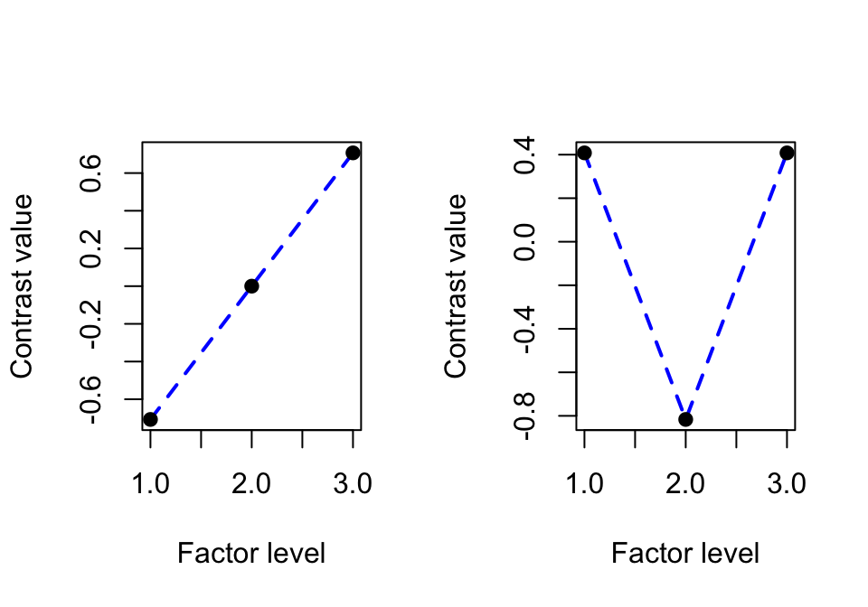
For ordered factors with more levels, further contrasts correspond to a cubic trend, and so on. For a four-level ordered factor:
contr.poly(4)## .L .Q .C
## [1,] -0.6708204 0.5 -0.2236068
## [2,] -0.2236068 -0.5 0.6708204
## [3,] 0.2236068 -0.5 -0.6708204
## [4,] 0.6708204 0.5 0.2236068the three contrasts capture:
L: how much does relationship with response look like a line?
Q: `` `` a parabola?
C: `` `` a cubic function?
Visually, the contrasts for four levels (\(k=4\)) are: 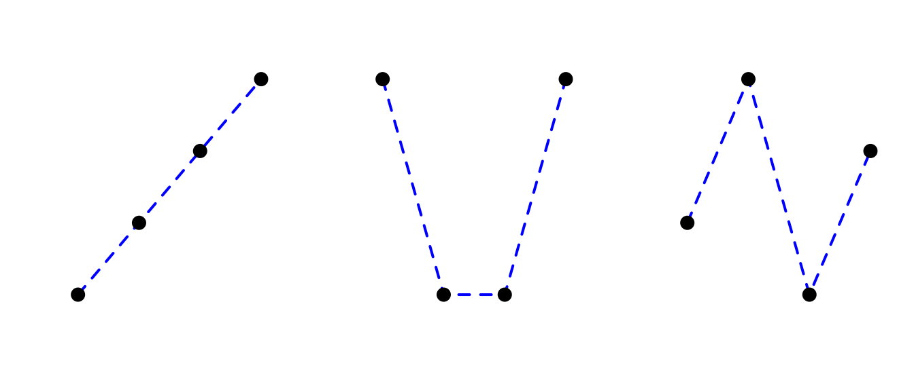
where axes have been removed for clarity.
9.2.2 Using an ordered factor as a predictor
For our example, we predict Regularity as a function of the verb’s auxiliary (Auxiliary.ord) using a logistic regression:
regularity.mod.1 <- glm(Regularity ~ Auxiliary.ord, data=regularity, family="binomial")
summary(regularity.mod.1)##
## Call:
## glm(formula = Regularity ~ Auxiliary.ord, family = "binomial",
## data = regularity)
##
## Deviance Residuals:
## Min 1Q Median 3Q Max
## -1.8307 0.6438 0.6438 0.6438 1.3537
##
## Coefficients:
## Estimate Std. Error z value Pr(>|z|)
## (Intercept) 0.51944 0.17029 3.050 0.00229 **
## Auxiliary.ord.L -1.32507 0.33145 -3.998 6.39e-05 ***
## Auxiliary.ord.Q 0.02954 0.25324 0.117 0.90713
## ---
## Signif. codes: 0 '***' 0.001 '**' 0.01 '*' 0.05 '.' 0.1 ' ' 1
##
## (Dispersion parameter for binomial family taken to be 1)
##
## Null deviance: 750.12 on 699 degrees of freedom
## Residual deviance: 719.92 on 697 degrees of freedom
## AIC: 725.92
##
## Number of Fisher Scoring iterations: 4The linear trend has large effect size and is very significant (\(p<0.0001\)), while the quadratic trend has low effect size and is not significant (\(p=0.91\)). This means the model predicts an essentially linear relationship between Auxiliary.ord and Regularity.
This example illustrates one use for ordered factors—dimensionality reduction, by reducing the number of contrasts needed to represent a factor’s effect. If we wanted to simplify the model, it would be justified at this point to drop the quadratic trend, and just use the linear contrast to represent the effect of Auxiliary.ord.2 We wouldn’t gain much by doing so here (just one fewer regression coefficient), but when dealing with ordered factors with 5+ levels, dimensionality reduction can make model fitting and interpretation much easier.
To visualize the predicted relationship between auxiliary and regularity probability (in log-odds and probability space):
## set up a dataframe which varies in Auxiliary.ord:
newdata <- with(regularity, data.frame(Auxiliary.ord = unique(Auxiliary.ord)))
## predictions at each level of Auxiliary.ord (in log-odds)
newdata$pred <- predict(regularity.mod.1, newdata=newdata)
## predictions in probability
newdata$pred.p <- invlogit(newdata$pred)
regularityPlot1 <- ggplot(aes(x=Auxiliary.ord, y=pred), data=newdata) +
geom_point(size=2) +
xlab("Auxiliary (log-odds)") +
ylab("Predicted % regular (logit)")
regularityPlot2 <- ggplot(aes(x=Auxiliary.ord, y=pred.p), data=newdata) +
geom_point(size=2) +
xlab("Auxiliary (probability)") +
ylab("Predicted % regular") +
scale_y_continuous(labels=percent)
grid.arrange(regularityPlot1, regularityPlot2, ncol = 2)
The predicted trend is “linear” in the sense that the three points lie on a line. This replicates the pattern in the empirical data (in log-odds):
summDf <- regularity %>% group_by(Auxiliary) %>% summarise(mean=logit(mean(Regularity=='regular')))
ggplot(aes(x=Auxiliary,y=mean), data=summDf) +
geom_point() +
ylab("log-odds (Regularity==regular)")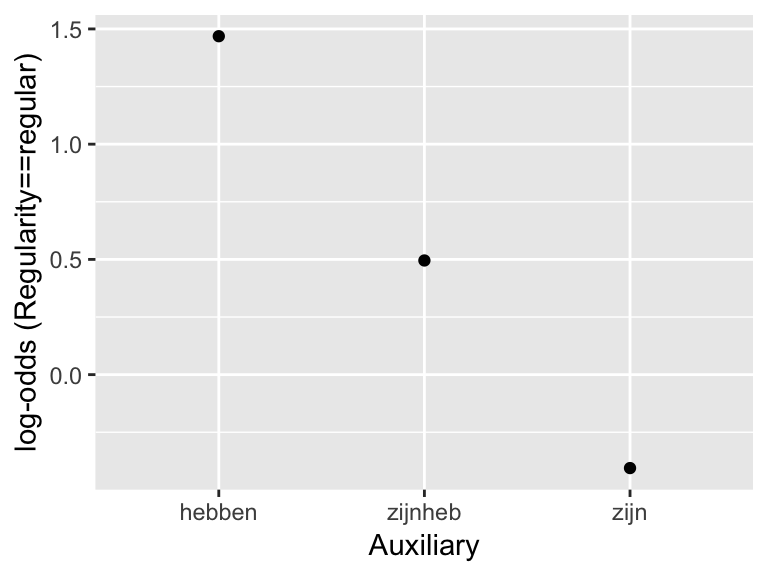
9.2.3 Further points
Some other variables that could be represented by ordered factors:
Number of onset consonants in a syllable (Ex: 1 < 2 < 3)
Socio-economic status (SES) (Ex: low < low/mid < high/mid < high)
Strength of prosodic boundary (word < small phrase < large phrase < utterance)
L2 level (no knowledge < beginner < intermediate < advanced)
Note that ordered factors are just factors with a particular (sensible) contrast coding scheme. A model where a conceptually “ordered” variable is entered as a non-ordered factor is not incorrect, the results just may be harder to interpret.
When using ordered factors in a mixed-effects model: because ordered factors are still factors, the issues with including factors in a mixed model discussed in Section ?? arise. These issues (frequently overparametrized models, uncorrelated random effects) and solutions are very similar for ordered factors, and are discussed in an Appendix (Sec. 9.7).
Example 2
For the alternatives data, we model the probability of stress shifting (shifted) in a mixed-effects logistic regression, with:
Fixed effect:
contextRandom effects: by-item and by-participant intercept and slope
This predictor is conceptually ordered, with levels Alternative < NoAlternative < New (see the dataset description to understand why). So we can convert it to an ordered factor:
alternatives <- mutate(alternatives, context=as.ordered(factor(context, levels=c("Alternative", "NoAlternative", "New"))))It turns out (see Section 9.7) that this model gives perfect random-effect correlations if the random effect structure (1+context|participant) + (1|context|item) is used, so we instead use uncorrelated random effects. To do so, we first convert context to two numeric contrasts, which correspond to the linear and quadratic trends:
alternatives <- mutate(alternatives,
contextL = model.matrix(~context, alternatives)[,2],
contextQ = model.matrix(~context, alternatives)[,3])To fit and summarize the model:
alternativesMod2 <- glmer(shifted ~ context +
(1+contextL + contextQ||item) +
(1+contextL + contextQ||participant),
data=alternatives,
family="binomial",
control=glmerControl(optimizer = "bobyqa"))
summary(alternativesMod2)## Generalized linear mixed model fit by maximum likelihood (Laplace
## Approximation) [glmerMod]
## Family: binomial ( logit )
## Formula: shifted ~ context + (1 + contextL + contextQ || item) + (1 +
## contextL + contextQ || participant)
## Data: alternatives
## Control: glmerControl(optimizer = "bobyqa")
##
## AIC BIC logLik deviance df.resid
## 652.4 692.3 -317.2 634.4 613
##
## Scaled residuals:
## Min 1Q Median 3Q Max
## -2.8990 -0.5248 -0.2875 0.5782 3.5101
##
## Random effects:
## Groups Name Variance Std.Dev.
## participant contextQ 2.272e-15 4.766e-08
## participant.1 contextL 2.174e-01 4.663e-01
## participant.2 (Intercept) 6.526e-01 8.078e-01
## item contextQ 1.723e-01 4.151e-01
## item.1 contextL 9.398e-01 9.694e-01
## item.2 (Intercept) 4.925e-01 7.018e-01
## Number of obs: 622, groups: participant, 18; item, 12
##
## Fixed effects:
## Estimate Std. Error z value Pr(>|z|)
## (Intercept) -1.0609 0.3040 -3.490 0.000483 ***
## context.L -1.9482 0.3748 -5.198 2.01e-07 ***
## context.Q 0.2936 0.2196 1.337 0.181273
## ---
## Signif. codes: 0 '***' 0.001 '**' 0.01 '*' 0.05 '.' 0.1 ' ' 1
##
## Correlation of Fixed Effects:
## (Intr) cntx.L
## context.L 0.103
## context.Q 0.048 0.108Questions:
What does the model predict about:
The overall effect of
context? (What kind of relationship with log-odds of stress shift?)By-participant and by-item variability in the
contexteffect?
Comparing the predicted overall effect (for an “average” participant/item) to the empirical means (probability of stress shift for each context value):
## get model predictions at each level of 'context'
newdata <- with(alternatives, data.frame(context = unique(context)))
## re.form = NA : get predictions at "average" speaker and item values
newdata$pred <- invlogit(predict(alternativesMod2, newdata=newdata, re.form=NA))
summDf2 <- alternatives %>% group_by(context) %>% summarise(pred=mean(shifted))
predEmpDf <- rbind(data.frame(newdata, type='Predicted'),
data.frame(summDf2, type='Empirical'))
ggplot(aes(x=context, y=pred), data=predEmpDf) +
geom_point(aes(color=type),size=3) +
xlab("Context") +
ylab("Percent shifted stress") +
geom_hline(aes(yintercept=0), lty=2) +
geom_hline(aes(yintercept=1), lty=2)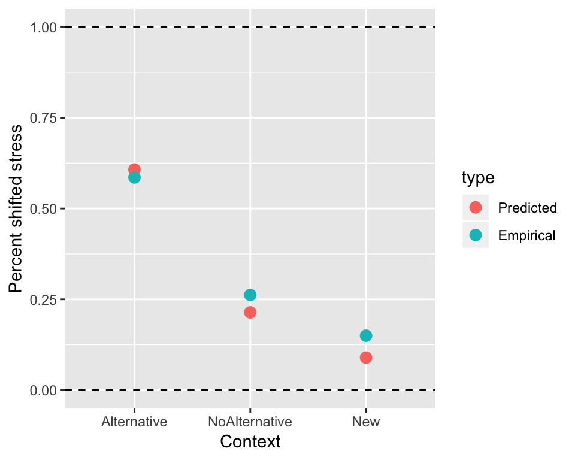 The model’s prediction (significant linear trend but not quadratic trend) makes sense. The relationship is basically linear—and would look more so in log-odds space.
Interestingly, the empirical data shows substantial variability among participants and items, many of which do not show a linear trend:
alternatives %>% group_by(context, participant) %>%
summarise(mean=mean(shifted)) %>%
ggplot(aes(x=context,y=mean)) +
geom_point(size=2) +
ylab("Percent shifted (by partic)") +
facet_wrap(~participant) +
scale_y_continuous(labels=percent, limits = c(0,1))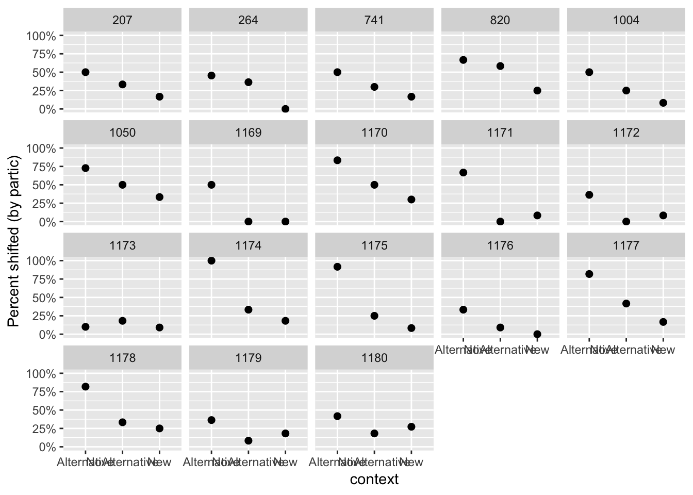
alternatives %>% group_by(context, item) %>% summarise(mean=mean(shifted)) %>%
ggplot(aes(x=context,y=mean)) +
geom_point(size=2) +
ylab("Percent shifted (by item)") +
facet_wrap(~item) +
scale_y_continuous(labels=percent, limits = c(0,1))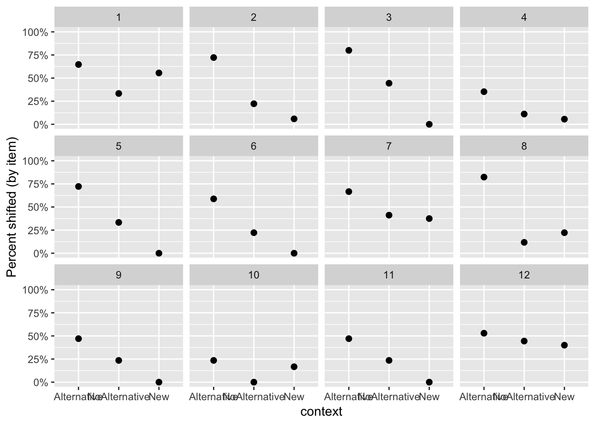
Questions:
What kind of variability is observed, among participants and among items? (In overall probability of stress shifting? In the
conditioneffect?)How do the by-participant and by-item random effect estimates of the model reflect these patterns of variability?
9.3 Nonlinear effects
So far we have always assumed that continuous variables have a relationship with the response that is linear—well-described by a straight line. In reality this is often not the case.
For example, consider the effect of word frequency (WrittenFrequency) on lexical decision reaction time (RTlexdec) in the english dataset. Plotting this relationship using a nonlinear smoother:
ggplot(aes(x=WrittenFrequency, y=RTlexdec), data=english) +
geom_smooth() +
geom_point(alpha=0.15, size=1)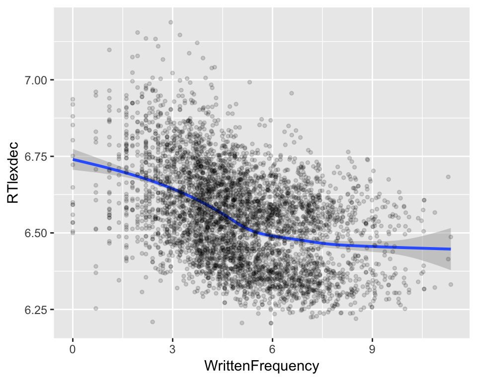
it is clear the relationship is not linear. Certainly RT decreases as a function of frequency, but the relationship is not a straight line. We would like to model this kind of relationship in a regression model.
There are several options for modeling such nonlinear functions, including:
Polynomials, such as a parabola or cubic equation. These are fitted in R by including terms like
poly(x,2)in a model (for a quadratic equation).Natural cubic splines, which you fit in R using
ns()(e.g.ns(x,3)for a spline with one “bend”)
We will use a related family of functions: restricted cubic splines (RCS), which are fitted using the rcs function in the rms package. Some discussion of RCS is given by Baayen (2008), and more technical discussion by Harrell (2001).
9.3.1 Splines: Definition and benefits
While polynomials are probably familiar to you (from high school math: lines, parabolas, etc.) splines are probably not. What are splines, and why should we use them instead of polynomial functions—which are easier to understand?
Intuitively a spline is a function made up of several polynomials glued together (“piecewise-defined”), constrained to be “smooth” at the places where the polynomial pieces connect (called knots). The glued-together polynomials can be small pieces of parabolas, lines, and so on.
Splines are like polynomials, but better behaved: they avoid interpolation errors and Runge’s phenomenon. They are better than polynomials especially at the very high and low values of a variable being modeled: polynomials tend to “blow up” when extrapolated beyond the range of the variable in the data, while splines can be constrained to grow only linearly.3
A polynomial is made up of components for different orders: you add together multiples of \(1\), \(x\), \(x^2\), and so on to approximate a function. Splines also approximate functions, but using a different (and more complex) set of components. There are many ways of defining splines (hence bs, ns, rcs, and other R functions), of which we consider only RCS.
9.3.2 Restricted cubic splines
Intuitively, a restricted cubic spline with \(k\) knots describes a curve with \(k-2\) “bends”. Thus, the simplest possible RCS has three knots, and describes a curve with one bend (analogous to a quadratic polynomial). An RCS term for a variable x is be added to a regression model in R using the notation rcs(x,k). For example, here we fit three models of reaction time as a function of word frequency, using progressively more complex splines (\(k= 3, 5, 7\)):
mod.rcs3 <- lm(RTlexdec ~ rcs(WrittenFrequency,3), data=english)
mod.rcs5 <- lm(RTlexdec ~ rcs(WrittenFrequency,5), data=english)
mod.rcs7 <- lm(RTlexdec ~ rcs(WrittenFrequency,7), data=english)The predictions of these models are:
english$pred.rcs3 <- predict(mod.rcs3)
english$pred.rcs5 <- predict(mod.rcs5)
english$pred.rcs7 <- predict(mod.rcs7)
rcs3PredPlot <- ggplot(aes(x=WrittenFrequency, y=pred.rcs3), data=english) +
geom_line(size=1, color='blue') +
ylab("RT (predicted)") +
xlab("Written Frequency\n\nOversmooths") +
ggtitle("k = 3") +
theme(plot.title = element_text(hjust = 0.5))
rcs5PredPlot <- ggplot(aes(x=WrittenFrequency, y=pred.rcs5), data=english) +
geom_line(size=1, color='blue') +
ylab("RT (predicted)") +
xlab("Written Frequency\n\n") +
ggtitle("k = 5") +
theme(plot.title = element_text(hjust = 0.5))
rcs7PredPlot <- ggplot(aes(x=WrittenFrequency, y=pred.rcs7), data=english) +
geom_line(size=1, color='blue') +
ylab("RT (predicted)") +
xlab("Written Frequency\n\nOverfits") +
ggtitle("k = 7") +
theme(plot.title = element_text(hjust = 0.5))
grid.arrange(rcs3PredPlot, rcs5PredPlot, rcs7PredPlot, ncol = 3)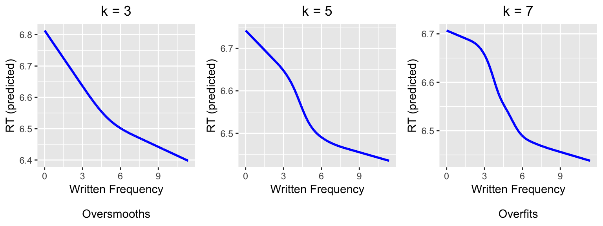
Comparing to the plot of the empirical data above, we can see visually that \(k=3\) is not complex enough (“underfits”) and \(k=7\) is too complex (“overfits”).
9.3.3 Choosing spline complexity
This example leads to the question: how to decide on a value of \(k\) to model a nonlinear effect, and whether a nonlinear effect is justified at all?
9.3.3.1 Method 1: Visual inspection
Make a plot of the predictor versus the response, using a nonlinear smoother, and eyeball the number of bends in the relationship between the two variables.4
For example, for the RT~frequency example, it looks like there are two bends:
ggplot(aes(x=WrittenFrequency, y=RTlexdec), data=english) +
geom_smooth() +
geom_point(alpha=0.15, size=1)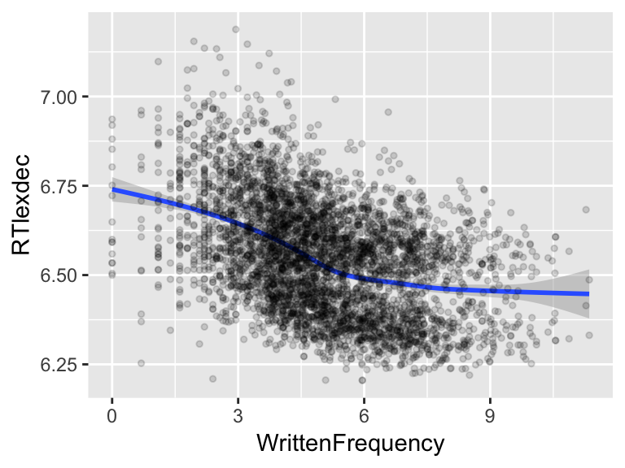
so we would choose \(k=4\).
9.3.3.2 Method 2: Data-driven
Fit models with different values of \(k\), as well as a linear model:
mod.linear <- lm(RTlexdec ~ WrittenFrequency, data=english)
mod.rcs3 <- lm(RTlexdec ~ rcs(WrittenFrequency,3), data=english)
mod.rcs4 <- lm(RTlexdec ~ rcs(WrittenFrequency,4), data=english)
mod.rcs5 <- lm(RTlexdec ~ rcs(WrittenFrequency,5), data=english)
mod.rcs6 <- lm(RTlexdec ~ rcs(WrittenFrequency,6), data=english)then use model comparison to see at what value of \(k\) adding complexity no longer gives a better fit:
anova(mod.linear, mod.rcs3, mod.rcs4, mod.rcs5, mod.rcs6, mod.rcs7)## Analysis of Variance Table
##
## Model 1: RTlexdec ~ WrittenFrequency
## Model 2: RTlexdec ~ rcs(WrittenFrequency, 3)
## Model 3: RTlexdec ~ rcs(WrittenFrequency, 4)
## Model 4: RTlexdec ~ rcs(WrittenFrequency, 5)
## Model 5: RTlexdec ~ rcs(WrittenFrequency, 6)
## Model 6: RTlexdec ~ rcs(WrittenFrequency, 7)
## Res.Df RSS Df Sum of Sq F Pr(>F)
## 1 4566 91.194
## 2 4565 89.602 1 1.59256 81.8914 < 2.2e-16 ***
## 3 4564 89.056 1 0.54555 28.0526 1.236e-07 ***
## 4 4563 88.862 1 0.19449 10.0011 0.001575 **
## 5 4562 88.807 1 0.05496 2.8259 0.092822 .
## 6 4561 88.699 1 0.10793 5.5497 0.018526 *
## ---
## Signif. codes: 0 '***' 0.001 '**' 0.01 '*' 0.05 '.' 0.1 ' ' 1The significant difference between the linear model and the \(k=3\) model means that a nonlinear effect is justified. Increasing \(k\) from 3 to 4 significantly improves the model, as does increasing from 4 to 5, but increasing from 5 to 6 doesn’t (\(p=0.09\)). So we would choose a nonlinear relationship with \(k=5\). (Note that this is different from what we chose by visual inspection, \(k=4\), but the relationships for \(k=4\) and \(k=5\) turn out to be very similar.)
Practical note
Choosing \(k\) is a model selection problem, and like all model selection techniques the resulting model needs to be sanity-checked against the empirical data. In practice, models with very high \(k\) often are “better” than a model with lower \(k\) by model comparison via anova(), even when the value of \(k\) makes no sense given visual inspection. For example, a model with 9 knots significantly improves on the \(k=5\) model:
mod.rcs9<- lm(RTlexdec ~ rcs(WrittenFrequency,9), data=english)
anova(mod.rcs5, mod.rcs9)## Analysis of Variance Table
##
## Model 1: RTlexdec ~ rcs(WrittenFrequency, 5)
## Model 2: RTlexdec ~ rcs(WrittenFrequency, 9)
## Res.Df RSS Df Sum of Sq F Pr(>F)
## 1 4563 88.862
## 2 4559 88.664 4 0.19759 2.54 0.03796 *
## ---
## Signif. codes: 0 '***' 0.001 '**' 0.01 '*' 0.05 '.' 0.1 ' ' 1but there are obviously not 7 clear bends in the empirical relationship between WrittenFrequency and RTlexdec. In practice, you might use the lowest value of \(k\) for which model comparison shows a significant improvement (over \(k-1\)) and the predicted relationship is sensical.
Another option to choose a good value of \(k\) would be to use another method for model comparison, rather than the F test (what anova does by default for linear regressions). BIC (Sec. 3.146.1) may be a good choice, as it tends to penalize extra terms more highly than other methods we’ve considered (e.g. AIC, F test, LR test for logistic regressions). For the current example:
BIC(mod.linear, mod.rcs3, mod.rcs4, mod.rcs5, mod.rcs6, mod.rcs9)## df BIC
## mod.linear 3 -4889.713
## mod.rcs3 4 -4961.764
## mod.rcs4 5 -4981.235
## mod.rcs5 6 -4982.795
## mod.rcs6 7 -4977.194
## mod.rcs9 10 -4959.256choosing the model with lowest BIC would give \(k=5\), a sensible value.
9.3.4 RCS components
Examining the model with \(k=5\):
summary(mod.rcs5)##
## Call:
## lm(formula = RTlexdec ~ rcs(WrittenFrequency, 5), data = english)
##
## Residuals:
## Min 1Q Median 3Q Max
## -0.46761 -0.11624 -0.00069 0.10278 0.53806
##
## Coefficients:
## Estimate Std. Error t value
## (Intercept) 6.742126 0.016089 419.059
## rcs(WrittenFrequency, 5)WrittenFrequency -0.030765 0.005694 -5.404
## rcs(WrittenFrequency, 5)WrittenFrequency' -0.159054 0.037966 -4.189
## rcs(WrittenFrequency, 5)WrittenFrequency'' 0.761531 0.183525 4.149
## rcs(WrittenFrequency, 5)WrittenFrequency''' -0.810377 0.241481 -3.356
## Pr(>|t|)
## (Intercept) < 2e-16 ***
## rcs(WrittenFrequency, 5)WrittenFrequency 6.87e-08 ***
## rcs(WrittenFrequency, 5)WrittenFrequency' 2.85e-05 ***
## rcs(WrittenFrequency, 5)WrittenFrequency'' 3.39e-05 ***
## rcs(WrittenFrequency, 5)WrittenFrequency''' 0.000798 ***
## ---
## Signif. codes: 0 '***' 0.001 '**' 0.01 '*' 0.05 '.' 0.1 ' ' 1
##
## Residual standard error: 0.1396 on 4563 degrees of freedom
## Multiple R-squared: 0.2098, Adjusted R-squared: 0.2091
## F-statistic: 302.9 on 4 and 4563 DF, p-value: < 2.2e-16there are four rows, with regression coefficients (etc.) describing the nonlinear relationship. For a linear relationship it was clear what the coefficient means: the change in \(Y\) for a unit change in \(X\). What do the coefficients for an RCS mean?
9.3.4.1 Short answer
The short answer is: these coefficients are hard to interpret, and it’s fine to mostly ignore them, increase interpreting the nonlinear effect of \(X\) as follows:
Plotting model predictions to see the predicted effect
To assess whether (the nonlinear effect of) \(X\) is significant, report a model comparison with a model without the nonlinear term.
For the current example: code to visualize the nonlinear relationship is above, and you could report this in a paper as:
“There was a nonlinear effect of frequency on reaction time, modeled using a restricted cubic spline with 5 knots (\(F_{4567,4} = 303\), \(p<0.0001\)), where the number of knots was chosen by picking the value which gave lowest BIC.”
If you want to also report that a nonlinear effect in particular was justified, you could add a sentence like
“A nonlinear relationship is clear from the empirical data (Fig. X), and significantly improves on a linear effect of frequency (\(F_{4566,3}=40\), \(p<0.0001\)).”5
The model comparisons used in these reports are:
mod.int <- lm(RTlexdec ~ 1, data=english)
anova(mod.linear, mod.rcs5)## Analysis of Variance Table
##
## Model 1: RTlexdec ~ WrittenFrequency
## Model 2: RTlexdec ~ rcs(WrittenFrequency, 5)
## Res.Df RSS Df Sum of Sq F Pr(>F)
## 1 4566 91.194
## 2 4563 88.862 3 2.3326 39.926 < 2.2e-16 ***
## ---
## Signif. codes: 0 '***' 0.001 '**' 0.01 '*' 0.05 '.' 0.1 ' ' 1anova(mod.int, mod.rcs5)## Analysis of Variance Table
##
## Model 1: RTlexdec ~ 1
## Model 2: RTlexdec ~ rcs(WrittenFrequency, 5)
## Res.Df RSS Df Sum of Sq F Pr(>F)
## 1 4567 112.456
## 2 4563 88.862 4 23.594 302.88 < 2.2e-16 ***
## ---
## Signif. codes: 0 '***' 0.001 '**' 0.01 '*' 0.05 '.' 0.1 ' ' 19.3.4.2 Long answer: Components of nonlinear functions
The rows of the regression table actually refer to “components” of the nonlinear function being modeled by the spline. To get a sense for what that means, let’s consider an example: the WrittenFrequency variable, which is roughly normally distributed with range \(\approx 0-12\):
hist(english$WrittenFrequency)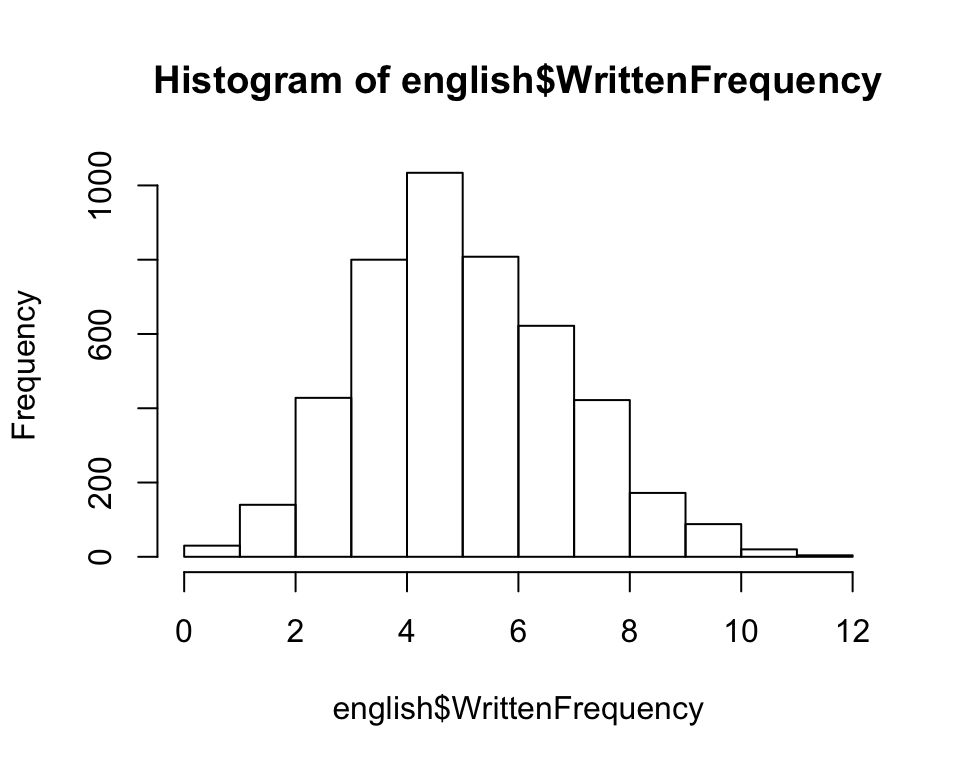
A nonlinear function of this variable could be included in a regression using a polynomial term, or an RCS term.
The first few components for a polynomial term would be: 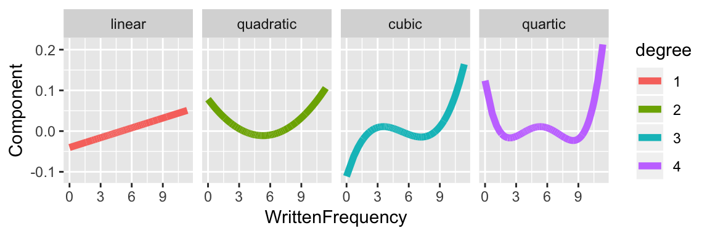
Note that for degree \(k>2\) if WrittenFrequency goes below 0 or above 10, the component increases or decreases very quickly (as \(x^k\)).
In comparison, the components for restricted cubic splines for this data for \(k=4\) are: 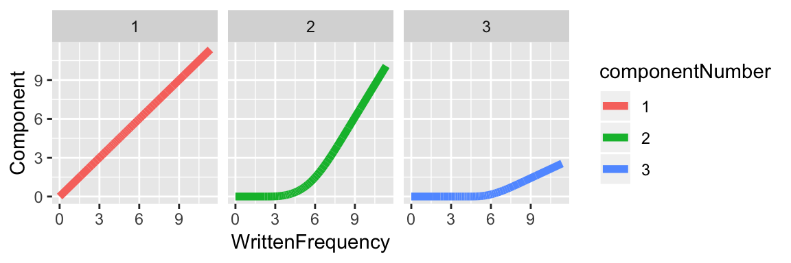
And for \(k=5\) the components are: 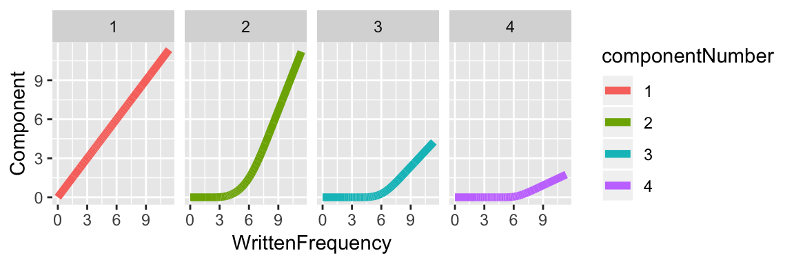
The four coefficients of the model above (with a \(k=5\) RCS term for WrittenFrequency) refer to these four components. The predicted effect of WrittenFrequency on reaction time is: \[
-0.03 \cdot \text{component1} -0.016 \cdot \text{component2} +
0.761 \cdot \text{component3} -0.810 \cdot \text{component4}
\] where -0.03, etc. are the coefficient values.
From the last two figures, we can see that each RCS component only grows linearly if extrapolated beyond the endpoints of the data. This is a useful property which gives better generalization on new data, when new values of the independent variable (here, WrittenFrequency) are observed.
9.3.5 Using RCS in a mixed model
As an example, we model the effect of speech rate deviation (speakingRateDev) on log-transformed voice onset time (logVOT) for the VOT dataset.
The empirical effect seems clearly non-linear:
ggplot(aes(x=speakingRateDev, y=logVOT), data=vot) +
geom_smooth() +
geom_point(alpha=0.15, size=1) +
xlab("Speech rate deviation") +
ylab("log(VOT)")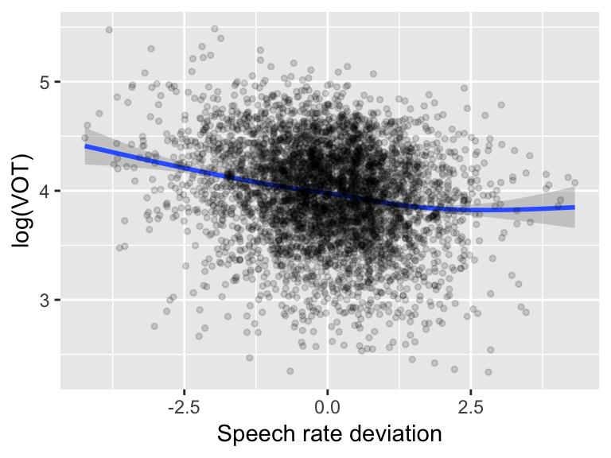 with speech rate having little effect on VOT in sufficiently fast speech.
Questions:
- What \(k\) would we choose by visual inspection?
Exercise
To choose \(k\) in a data-driven fashion, try fitting these models using just random intercepts (no slopes) of Speaker and Word, and compare them using model comparison:
VOT ~ speakingRateDev(linear model)Similar model with RCS for \(k = 3\)
Similar model with RCS for \(k = 4\)
9.3.6 Random slopes for RCS terms
Fitting a “maximal” mixed-effects model with random slopes for RCS terms often results in issues that are by now familiar (Sec. ??):
votMod.corr <- lmer(logVOT ~ rcs(speakingRateDev, 3) + (1+rcs(speakingRateDev, 3) | Word) + (1+rcs(speakingRateDev,3)|Speaker), data=vot)## Warning in checkConv(attr(opt, "derivs"), opt$par, ctrl =
## control$checkConv, : unable to evaluate scaled gradient## Warning in checkConv(attr(opt, "derivs"), opt$par, ctrl =
## control$checkConv, : Model failed to converge: degenerate Hessian with 1
## negative eigenvaluessummary(votMod.corr)## Linear mixed model fit by REML ['lmerMod']
## Formula: logVOT ~ rcs(speakingRateDev, 3) + (1 + rcs(speakingRateDev,
## 3) | Word) + (1 + rcs(speakingRateDev, 3) | Speaker)
## Data: vot
##
## REML criterion at convergence: 4595.4
##
## Scaled residuals:
## Min 1Q Median 3Q Max
## -4.2267 -0.6003 0.0509 0.6510 3.0740
##
## Random effects:
## Groups Name Variance Std.Dev. Corr
## Word (Intercept) 0.0000000 0.00000
## rcs(speakingRateDev, 3)speakingRateDev 0.0170030 0.13040 NaN
## rcs(speakingRateDev, 3)speakingRateDev' 0.0235881 0.15358 NaN
## Speaker (Intercept) 0.0253568 0.15924
## rcs(speakingRateDev, 3)speakingRateDev 0.0022754 0.04770 0.16
## rcs(speakingRateDev, 3)speakingRateDev' 0.0001518 0.01232 0.12
## Residual 0.1450546 0.38086
##
##
##
## -1.00
##
##
## -0.96
##
## Number of obs: 4728, groups: Word, 424; Speaker, 21
##
## Fixed effects:
## Estimate Std. Error t value
## (Intercept) 3.99525 0.03700 107.966
## rcs(speakingRateDev, 3)speakingRateDev -0.15343 0.01908 -8.043
## rcs(speakingRateDev, 3)speakingRateDev' 0.10948 0.01828 5.989
##
## Correlation of Fixed Effects:
## (Intr) rc(RD,3)RD
## rcs(RD,3)RD 0.230
## rc(RD,3)RD' -0.175 -0.837
## convergence code: 0
## unable to evaluate scaled gradient
## Model failed to converge: degenerate Hessian with 1 negative eigenvaluesnon-convergence, and perfect correlations between random effects. There are a couple probable causes, both of which came up when we have hit these issues before:
The model may be overparametrized—the random-effect structure is too complex for the dataset size.
The predictors are not centered (see Section 9.3.4)—which results in substantial avoidable collinearity. (See the lower-right entry of
Correlation of fixed effects: the correlation between the two RCS components is high (\(-0.83\)).)
There are two corresponding ways to deal with these issues if they come up.
Option 1: Fit a model without random-effect correlations
To do this, we need to extract the individual components of the RCS term as numeric variables—this is analogous to extracting the contrasts as numeric variables for a factor, to use uncorrelated random effects.
This code extracts the two components for the spline with 3 knots, and adds them to the dataframe as columns:
vot$rateDev.comp1 <- rcspline.eval(vot$speakingRateDev, nk=3, inclx=TRUE)[,1]
vot$rateDev.comp2 <- rcspline.eval(vot$speakingRateDev, nk=3, inclx=TRUE)[,2]The function rcspline.eval gives a matrix of components, nk=3 selects \(k\), [,1] or [,2] selects the matrix column number, and inclx=TRUE adds the linear component in addition to the nonlinear components.
We can then fit the model without random-effect correlations:
votMod.nocorr <- lmer(logVOT ~ rateDev.comp1 + rateDev.comp2 +
(1+rateDev.comp1 + rateDev.comp2 || Word) +
(1+rateDev.comp1 + rateDev.comp2||Speaker),
data=vot)The model now converges. (This may not be kosher, though—there are conceptual issues with using uncorrelated random effects for non-centered variables (Barr, Levy, Scheepers, & Tily, 2013).
The model is:
summary(votMod.nocorr)## Linear mixed model fit by REML ['lmerMod']
## Formula:
## logVOT ~ rateDev.comp1 + rateDev.comp2 + ((1 | Word) + (0 + rateDev.comp1 |
## Word) + (0 + rateDev.comp2 | Word)) + ((1 | Speaker) + (0 +
## rateDev.comp1 | Speaker) + (0 + rateDev.comp2 | Speaker))
## Data: vot
##
## REML criterion at convergence: 4475.1
##
## Scaled residuals:
## Min 1Q Median 3Q Max
## -4.3005 -0.5865 0.0448 0.6312 3.3378
##
## Random effects:
## Groups Name Variance Std.Dev.
## Word (Intercept) 2.914e-02 0.170708
## Word.1 rateDev.comp1 2.327e-04 0.015255
## Word.2 rateDev.comp2 9.418e-06 0.003069
## Speaker (Intercept) 2.540e-02 0.159365
## Speaker.1 rateDev.comp1 1.358e-03 0.036856
## Speaker.2 rateDev.comp2 0.000e+00 0.000000
## Residual 1.394e-01 0.373399
## Number of obs: 4728, groups: Word, 424; Speaker, 21
##
## Fixed effects:
## Estimate Std. Error t value
## (Intercept) 4.07384 0.03913 104.113
## rateDev.comp1 -0.10347 0.01391 -7.436
## rateDev.comp2 0.03810 0.01237 3.080
##
## Correlation of Fixed Effects:
## (Intr) rtDv.1
## rateDv.cmp1 0.176
## rateDv.cmp2 -0.259 -0.646Note the significant rateDev.comp1 and rateDev.comp2 terms, which we can think of as the “linear” and “nonlinear” terms.
Questions:
What does the fact that both are significant tell us?
How do people differ in the speech rate effect? (Examine the random slope terms.)
Detour: Visualizing nonlinear effects
It would be nice to visualize the predicted nonlinear effect from a model, but this turns out to be slightly tricky and is not shown here.
An easier approximation, which is usually a good idea anyway (as a sanity check that the empirical data shows the qualitative effect predicted by the model), is to plot a smooth over the empirical data using a spline with the same number of knots as the RCS term in the model.
For example, to visualize the effect of an RCS term with 3 knots for a VOT ~ speech rate model:
ggplot(aes(x=speakingRateDev, y=logVOT), data=vot) +
geom_smooth(method='lm', formula=y~splines::ns(x,3)) +
xlab("Speech rate deviation") +
ylab("VOT (log)")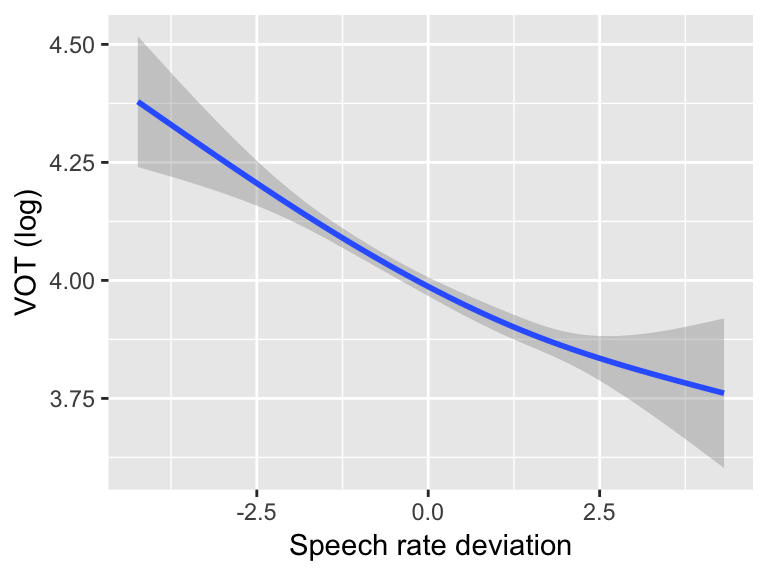
Option 2: Use centered predictors
Note that RCS components are not centered, by default—as can be seen in the plots of these components for \(k=4\) and \(k=5\) in Sec. 9.3.4.2, where each component is positive for all values of WrittenFrequency. Less problematically, they are not orthogonal—for example, components 1 and 2 are clearly correlated (for \(k=4\) and \(k=5\)), as component 2 is a line for WrittenFrequency>6.
We can address both issues by using the principal components of the RCS components: a linear transformation which makes them centered and orthogonal. You can extract the principal components in R using the pc=TRUE flag:
vot$rateDev.pcomp1 <- rcspline.eval(vot$speakingRateDev, nk=3,inclx=TRUE, pc=TRUE)[,1]
vot$rateDev.pcomp2 <- rcspline.eval(vot$speakingRateDev, nk=3, inclx=TRUE, pc=TRUE)[,2]These are still restricted cubic spline components (they look like glued-together polynomials, etc.), but they look different from before. For example, the first and second components for \(k=3\) for speakingRateDev for the vot data are:
rcsPlot1 <- ggplot(aes(x=speakingRateDev,y=rateDev.pcomp1), data=vot) +
geom_line() +
xlab("Speech rate deviation") +
ylab("First component")
rcsPlot2 <- ggplot(aes(x=speakingRateDev,y=rateDev.pcomp2), data=vot) +
geom_line() +
xlab("Speech rate deviation") +
ylab("Second component")
grid.arrange(rcsPlot1, rcsPlot2, ncol = 2)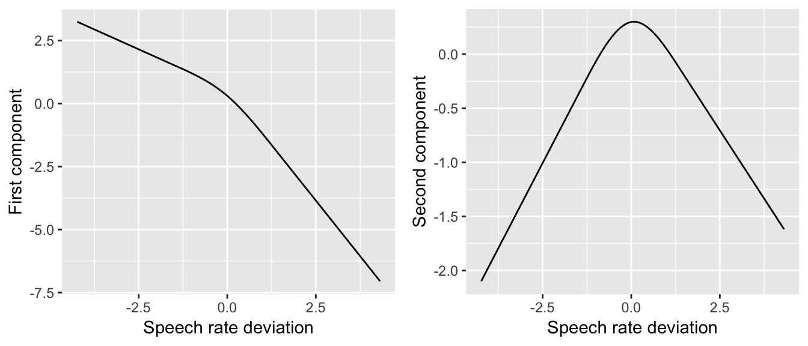
(Compare to the plots for \(k=4\) and \(k=5\) above.) For our purposes, the most important difference is that the PCs are centered.
A model using the PC versions of the RCS components, with full maximal random-effect structure (correlations between random effects included), would be:
votMod.corr.2 <- lmer(logVOT ~ rateDev.pcomp1 + rateDev.pcomp2 +
(1+rateDev.pcomp1 + rateDev.pcomp2|Word) +
(1+rateDev.pcomp1 + rateDev.pcomp2|Speaker),
data=vot)summary(votMod.corr.2)## Linear mixed model fit by REML ['lmerMod']
## Formula: logVOT ~ rateDev.pcomp1 + rateDev.pcomp2 + (1 + rateDev.pcomp1 +
## rateDev.pcomp2 | Word) + (1 + rateDev.pcomp1 + rateDev.pcomp2 |
## Speaker)
## Data: vot
##
## REML criterion at convergence: 4467.3
##
## Scaled residuals:
## Min 1Q Median 3Q Max
## -4.2831 -0.5951 0.0451 0.6310 3.3031
##
## Random effects:
## Groups Name Variance Std.Dev. Corr
## Word (Intercept) 0.0277041 0.16645
## rateDev.pcomp1 0.0001375 0.01172 0.84
## rateDev.pcomp2 0.0011219 0.03349 -0.87 -0.46
## Speaker (Intercept) 0.0253885 0.15934
## rateDev.pcomp1 0.0007723 0.02779 -0.24
## rateDev.pcomp2 0.0029008 0.05386 0.02 -0.98
## Residual 0.1394170 0.37339
## Number of obs: 4728, groups: Word, 424; Speaker, 21
##
## Fixed effects:
## Estimate Std. Error t value
## (Intercept) 4.103607 0.037700 108.848
## rateDev.pcomp1 0.057963 0.008032 7.217
## rateDev.pcomp2 -0.113209 0.021463 -5.275
##
## Correlation of Fixed Effects:
## (Intr) rtDv.1
## ratDv.pcmp1 -0.145
## ratDv.pcmp2 -0.011 -0.427Crucially, this model makes the same predictions as votMod.corr—the only difference is in how the nonlinear function of speechRateDev is coded (analogously to using different contrast coding schemes for a factor).6 However, the new model converged without issue, while votMod.corr did not—likely because we are now representing the speechRateDev effect using centered and orthogonal variables.
Note that there is less collinearity in votMod.corr.2 than in votMod.corr—the correlations in Correlation of Fixed Effects are closer to zero.
Questions:
- Why is this?
9.3.7 Nonlinear effects: Summary
To summarize:
Nonlinear effects can be used to capture non-linear relationships between the response and (a) predictor(s). Such relationships are common, so using nonlinear effects is often appropriate.
- Modeling nonlinear relationships somehow is more important than the actual method used!
In terms of a method: we recommend using splines to code nonlinear effects. (Here we have demonstrated restricted cubic splines, but other flavors are OK.)
Pro: Splines are well-behaved and should lead to better generalization to new data.
Con: Spline components are tricky to interpret, and (in R) sometimes tricky to work with.
Using polynomials to model nonlinear effects is OK, but dispreferred.
Pro: Polynomial terms are easy to interpret
Con: Polynomial functions are not well-behaved (interpolation issues, etc.) and can make bad predictions on new data.
Regardless, polynomials are commonly used, e.g. in Growth Curve Analysis (which is basically mixed-effects models with polynomials used to model a nonlinear relationship).
9.4 Predictions from mixed models
To visualize the predictions of mixed models, it is useful to make:
partial effect plots: These show the model’s prediction as one predictor is changed, holding others constant.
predictions for different levels of grouping factors (e.g. different participants): in the overall value (“intercept”), partial effect of a given predictor (“slope”), or something more complex.
Decent software (in 2018) exists for making such predictions from mixed models, such as:
Nonetheless, it is also useful to know how to make such predictions yourself, as pre-existing packages make various assumptions, and don’t always give exactly what you want.
9.4.1 Making Model Predictions
Visualizing predictions from a model in R always involves three steps:
Make a new dataframe of values you want to predict at
Get predictions of model for these values
Make plots of the predictions
Example
Let’s use a basic model of the acoustics correlate of stress shifting, for the givenness data:7
mod1 <- lmer(acoustics ~ conditionLabel*npType + voice +
(1 + clabel.williams*npType.pron || item) +
(1 + clabel.williams*npType.pron + voice.passive| participant),
data=givenness)Predictions only (no confidence intervals)
Step 1: Make dataframe of new values we want to predict the response for:
The expand.grid() function can be used to make all possible combinations of multiple predictors:
newdata <- with(givenness,
expand.grid(conditionLabel=unique(conditionLabel),
npType=unique(npType),
voice=unique(voice)))
newdata## conditionLabel npType voice
## 1 Williams full passive
## 2 Contrast full passive
## 3 Williams pronoun passive
## 4 Contrast pronoun passive
## 5 Williams full active
## 6 Contrast full active
## 7 Williams pronoun active
## 8 Contrast pronoun activeStep 2: Make model predictions
If you want predictions based on fixed effects only (no random effects), use the predict() function with the flag re.form=NA:
newdata$prediction <- predict(mod1, newdata=newdata, re.form=NA)Step 3: Visualize
The model’s predictions for acoustics as a function of the three predictors (condition label, NP type, voice) are:
ggplot(aes(x=conditionLabel, y=prediction), data=newdata) +
geom_point(aes(color=npType)) +
geom_line(aes(color=npType,group=npType)) +
facet_wrap(~voice) +
ylab("Predicted value")
These predictions are for an average participant, and “average item”: meaning, the average over voice=active and voice=passive items.
To make a “partial effect plot” of just the effect of conditionLabel, say, we can simply average over the other variables:
newdata %>% group_by(conditionLabel) %>% summarise(pred=mean(prediction), dummy=1) %>% ggplot(aes(x=conditionLabel, y=pred)) + geom_point() +
geom_line(aes(group=dummy)) +
ylab("Predicted value")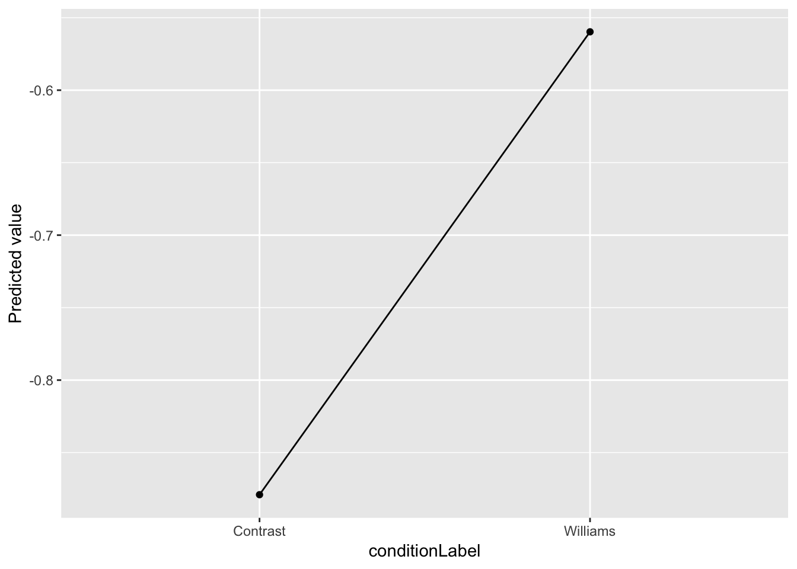
Predictions with confidence intervals
Generally we want to show model predictions with a measure of uncertainty, such as confidence intervals (CIs)
Obtaining CIs turns out to be less straightforward than obtaining just model predictions, because there is more than one way to define “uncertainty”. For example: do we want to take into account uncertainty from just (uncertainty about the) fixed effects? What about random effects? And how? (You can google “confidence intervals prediction lme4” to get a sense of the issue.)
You can get confidence intervals relatively simply using just the uncertainty in the fixed effects, as illustrated in Ben Bolker’s FAQ. Applied to our data:
## "design matrix" for fitted model
mm <- model.matrix(terms(mod1), data.frame(acoustics=1, newdata))
## SE of prediction, just from uncertainty in fixed effects and residual variance:
newdata$SE <- sqrt(diag(mm %*% tcrossprod(vcov(mod1), mm)))Note that the computed standard error (SE) does not take into account variation among participants, etc. It can be thought of as “the error for an average subject and item”.
Multiplying these standard errors by 1.96 can be used to construct 95% confidence intervals (again, calculated from the fixed-effect errors only), which can be visualized:
ggplot(aes(x=conditionLabel, y=prediction, ymin=prediction-1.96*SE, ymax=prediction+1.96*SE), data=newdata) +
geom_point(aes(color=npType)) +
geom_errorbar(aes(color=npType), width=0.3) +
facet_wrap(~voice) +
ylab("Predicted value")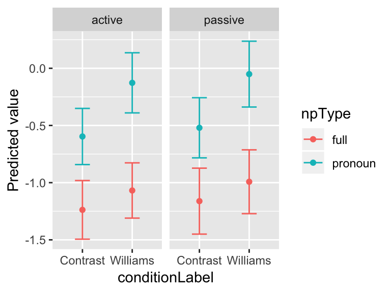
Extracting predicted random effects
Extracting partial effects, and “overall” values (intercepts) for each participant (etc.) is also of interest. Some examples are given in previous chapters, and further examples are shown in an Appendix (Sec. 9.6).
9.4.2 Simulation-based predictions
The examples seen so far calculate model predictions and confidence intervals using the terms of the fitted models—fixed-effect coefficient values and SEs, and so on. This requires writing some code (and some knowledge), but the predictions/CIs are computed quickly.
The more general solution, which requires little code or knowledge—but can be very slow—is computing model predictions and confidence intervals using simulation. Parametric or semi-parametric bootstrapping, as implemented in the bootMer package or the simulate function (from the arm package), can be used to estimate the probability distribution over values of any quantity predicted by the model—including a particular combination of predictor values, as in a partial-effect plot. This distribution can be used to obtain a “prediction” and “95% confidence interval” by computing e.g. the median and the 2.5%/97.5% quantiles. The downside is that simulation can be very computationally intensive—you essentially have to re-fit the model many (1000+) times to get reasonable estimates.
Useful examples are given in:
A vignette by J. Knowles and C. Frederick
An R-bloggers page by grumble10.
An example of a simple simulation-based method is shown for LMMs in Section ??.
9.5 Post-hoc tests and multiple comparisons
The multiple comparisons problem refers to the issue that the more hypotheses you test, the less meaningful the \(p\)-values are. (If we test 20 hypotheses with \(\alpha\) level \(0.05\), we will find 1 significant effect by chance, on average.)
A solution commonly used is to correct the \(p\)-values for “multiple comparisons” before comparing to \(\alpha\) (e.g. 0.05). Many such correction methods exist, including:
- The Bonferroni method: multiply \(p\) by the number of tests conducted
- This method has low power, and should never be used—see
?p.adjust.methodsin R.
- This method has low power, and should never be used—see
- The Holm method
- Less conservative than Bonferroni
Tukey HSD (“Honestly Significant Difference”)
FDR (“False Discovery Rate”), a.k.a. the Benjamini & Hochberg (BH) method
Not correcting for multiple comparisons when doing many statistical tests can easily lead to spurious results—this is often called “data dredging” or “p-hacking”.
Which multiple comparison method should be used? There is a trade-off between methods with higher power and lower Type I error. Reasonable and widely-used methods are Holm and Tukey HSD.
One place where the multiple comparisons problem comes up is for factors with multiple (>2) levels. When a model includes a categorical variable \(X\) with \(k\) levels, we know how to:
Ask \(k-1\) questions about how it affects the response: contrast coding (discussed in Sec. 6.6)
Ask “does \(X\) affect the response?”: likelihood ratio test (discussed in Sec. ??)
It is customary to not correct for multiple comparisons for (1)—and indeed, for any set of predictors in multiple regression models in general.8
But often, we would like to ask more than \(k-1\) questions, such as:
“is level 1 diff from level 2?” “Level 2 from level 3?” “Level 1 from level 3?”
“is there any Williams effect when
npType= pronoun?” (for thegivennessdata)
Such questions can be answered via hypothesis tests using post-hoc tests.9 These are also called “difference in means tests”, or other terms. It is common in ANOVA analyses to use “post-hoc tests” to refer to “testing which levels of a factor \(X\) are actually different from each other, after an ANOVA showed that \(X\) has a significant effect.”
When we ask more than \(k-1\) questions, the questions are not independent, so we need to correct for multiple comparisons.
Example
As an example, consider the alternatives dataset, where we will fit a mixed-effects logistic regression, with:
Response:
prominencePredictor:
context(NoAlternative, Alternative, None)Random effects: maximal, without random-effect correlations
The empirical pattern is:
## context prominence.ID se
## 1 Alternative 0.4146341 0.03449301
## 2 NoAlternative 0.7380952 0.03041268
## 3 New 0.8502415 0.02486184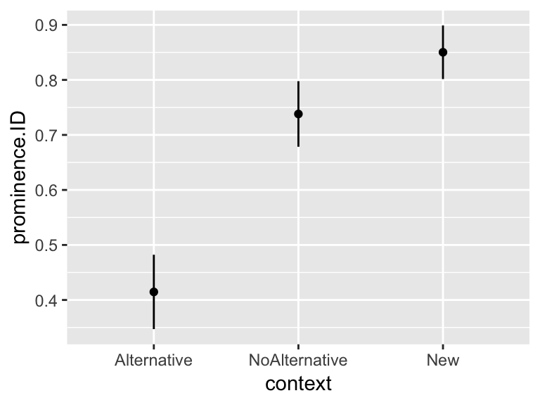
First, we make context1, context2 numerical predictors, corresponding to the two Helmert contrasts:
contrasts(alternatives$context) <- contr.helmert(3)
alternatives <- mutate(alternatives,
context1 = model.matrix(~context, alternatives)[,2],
context2 = model.matrix(~context, alternatives)[,3])The model is:
mod.nocorr <- glmer(prominence ~ context +
(1+context1 + context2||participant) +
(1+context1 + context2||item),
data=alternatives,
family="binomial",
control=glmerControl(optimizer = "bobyqa"))
summary(mod.nocorr)## Generalized linear mixed model fit by maximum likelihood (Laplace
## Approximation) [glmerMod]
## Family: binomial ( logit )
## Formula:
## prominence ~ context + (1 + context1 + context2 || participant) +
## (1 + context1 + context2 || item)
## Data: alternatives
## Control: glmerControl(optimizer = "bobyqa")
##
## AIC BIC logLik deviance df.resid
## 646.8 686.7 -314.4 628.8 613
##
## Scaled residuals:
## Min 1Q Median 3Q Max
## -3.5763 -0.5676 0.2484 0.5564 2.9286
##
## Random effects:
## Groups Name Variance Std.Dev.
## participant (Intercept) 0.67379 0.8208
## participant.1 context1 0.06545 0.2558
## participant.2 context2 0.00000 0.0000
## item (Intercept) 0.56035 0.7486
## item.1 context1 0.00000 0.0000
## item.2 context2 0.29399 0.5422
## Number of obs: 622, groups: participant, 18; item, 12
##
## Fixed effects:
## Estimate Std. Error z value Pr(>|z|)
## (Intercept) 1.1533 0.3199 3.605 0.000312 ***
## context1 0.8716 0.1375 6.338 2.32e-10 ***
## context2 0.7014 0.1909 3.673 0.000240 ***
## ---
## Signif. codes: 0 '***' 0.001 '**' 0.01 '*' 0.05 '.' 0.1 ' ' 1
##
## Correlation of Fixed Effects:
## (Intr) cntxt1
## context1 0.054
## context2 0.129 0.018The two significant fixed-effect coefficients can be interpreted as:
NoAlternative > Alternative (in terms of probability of prominence shift)
New > NoAlternative/Alternative
But what about NoAlternative versus New, or Alternative versus New?
The lsmeans package (now superceded by the emmeans package, with expanded functionality) is invaluable for carrying out post-hoc tests (Lenth, 2016, 2018). In this case, we examine every difference between two levels:
mod.lsmeans <- lsmeans::lsmeans(mod.nocorr, ~context)
pairs(mod.lsmeans)## contrast estimate SE df z.ratio p.value
## Alternative - NoAlternative -1.743220 0.2750211 NA -6.338 <.0001
## Alternative - New -2.975683 0.5915409 NA -5.030 <.0001
## NoAlternative - New -1.232463 0.5866488 NA -2.101 0.0896
##
## Results are given on the log odds ratio (not the response) scale.
## P value adjustment: tukey method for comparing a family of 3 estimatesThis reports an estimated difference between each pair of levels (here, in log-odds), with an associated \(p\)-value, corrected for multiple comparisons using the Tukey HSD method.
We can conclude that: Alternative \(<\) NoAlternative \(\leq\) New (at \(\alpha=0.05\)).
Post-hoc tests can also be used for:
Checking whether particular subsets of levels differ from others
Checking whether \(X\) has an effect, for each level of \(Y\) (e.g., “is the Williams effect significant for each level of
npType?”, for thegivennessdata)
For example:
temp <- lsmeans::lsmeans(mod1, ~conditionLabel | npType)
pairs(temp)## npType = full:
## contrast estimate SE df t.ratio p.value
## Contrast - Williams -0.1694650 0.08214115 53.57 -2.063 0.0440
##
## npType = pronoun:
## contrast estimate SE df t.ratio p.value
## Contrast - Williams -0.4691477 0.09227544 22.89 -5.084 <.0001
##
## Results are averaged over the levels of: voiceYou can read more in the very useful vignette for lsmeans (or for emmeans).
Exercise
For the
regularitydata, fit a logistic regression ofregularityas a function ofAuxiliaryUse
lsmeansto test: is there a difference betweenzijn/hebben
zijnheb/hebben
zijn/zijnheb
?
9.6 Appendix: Model predictions for indiviudal participants
A couple additional examples of predictions from mod1:
9.6.1 Predictions incorporating offsets for individual speakers
Get predictions for every speaker, for every combination of fixed-effect values:
newdata <- with(givenness,
expand.grid(participant=unique(participant),
item=unique(item),
conditionLabel=unique(conditionLabel),
npType=unique(npType),
voice=unique(voice),
voice.passive=unique(voice.passive),
clabel.williams=unique(clabel.williams),
npType.pron=unique(npType.pron)))
newdata$prediction <- predict(mod1, newdata=newdata, re.form=~(1|participant))These predictions can be used to obtain each speaker’s intercept (fixed effect + by-speaker intercept), and visualize their distribution across speakers:
byParticInt <- newdata %>% group_by(participant) %>% summarise(intercept = mean(prediction))
ggplot(byParticInt, aes(intercept)) +
geom_histogram(bins = 30) +
geom_vline(xintercept=0, lty=2) +
xlab("Speaker's intercept") 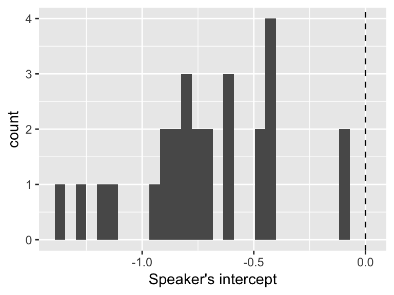
We can conclude that speakers differ substantially in their baseline rate of stress shifting (acoustics) value, but they are always more likely to not shift (negative value).
9.6.2 Predicted Williams effect for each speaker
One way to do this:
- Get overall Williams effect (across participant and items)
newdata2 <- with(givenness,
expand.grid(conditionLabel=unique(conditionLabel),
npType=unique(npType),
voice='active'))
newdata2$prediction <- predict(mod1, newdata2, re.form=NA)
overall <- mean((newdata2[1,'prediction']-newdata2[2,'prediction']),
(newdata2[3,'prediction']-newdata2[4,'prediction']))- Then, add each participant’s offset (random slope):
slopes <- ranef(mod1)$participant[['clabel.williams']]
byParticSlope <- data.frame(participant=rownames(ranef(mod1)$participant),
williamsEffect=overall + slopes)Visualize distribution of participant effects:
ggplot(byParticSlope, aes(williamsEffect)) +
geom_histogram(bins = 30) +
geom_vline(xintercept=0, lty=2) +
xlab("Speaker's Williams effect") 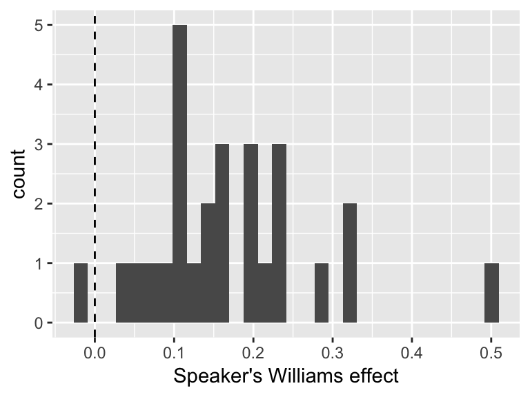
9.7 Appendix: Random slopes for factors
Ordered factors have the same issues when fitting random slopes with uncorrelated random-effect structures that we have seen for factors with multiple levels.
As an example, using the alternatives data, we fit a model with a fixed effect of context, coded as an ordered factor (Alternative < NoAlternative < New)
## relevel context to be in the intuitively plausible order
alternatives <- mutate(alternatives, context=as.ordered(factor(context, levels=c("Alternative", "NoAlternative", "New"))))and with by-participant random effects only.
Exercise: fit this model
Solution:
summary(alternativesMod1)## Generalized linear mixed model fit by maximum likelihood (Laplace
## Approximation) [glmerMod]
## Family: binomial ( logit )
## Formula:
## shifted ~ context + (1 + context | item) + (1 + context | participant)
## Data: alternatives
## Control: glmerControl(optimizer = "bobyqa")
##
## AIC BIC logLik deviance df.resid
## 654.6 721.1 -312.3 624.6 607
##
## Scaled residuals:
## Min 1Q Median 3Q Max
## -2.5891 -0.5648 -0.2148 0.5550 3.5691
##
## Random effects:
## Groups Name Variance Std.Dev. Corr
## participant (Intercept) 0.65857 0.8115
## context.L 0.23473 0.4845 -0.11
## context.Q 0.05022 0.2241 -0.27 -0.93
## item (Intercept) 0.67813 0.8235
## context.L 1.98312 1.4082 0.62
## context.Q 0.58874 0.7673 0.61 1.00
## Number of obs: 622, groups: participant, 18; item, 12
##
## Fixed effects:
## Estimate Std. Error z value Pr(>|z|)
## (Intercept) -1.25159 0.36521 -3.427 0.00061 ***
## context.L -2.33728 0.58091 -4.024 5.73e-05 ***
## context.Q 0.06461 0.36381 0.178 0.85905
## ---
## Signif. codes: 0 '***' 0.001 '**' 0.01 '*' 0.05 '.' 0.1 ' ' 1
##
## Correlation of Fixed Effects:
## (Intr) cntx.L
## context.L 0.567
## context.Q 0.461 0.760The high random-effect correlations here suggest we should try a model with uncorrelated random effects.
As we’ve seen before, fitting a model with standard notation for uncorrelated random effects (||) doesn’t work:
lmer(shifted ~ context +
(1+context||participant) +
(1+context||participant),
data=alternatives)## Warning in checkConv(attr(opt, "derivs"), opt$par, ctrl = control$checkConv, : Model is nearly unidentifiable: large eigenvalue ratio
## - Rescale variables?## Linear mixed model fit by REML ['lmerMod']
## Formula:
## shifted ~ context + ((1 | participant) + (0 + context | participant)) +
## ((1 | participant) + (0 + context | participant))
## Data: alternatives
## REML criterion at convergence: 704.8152
## Random effects:
## Groups Name Std.Dev. Corr
## participant (Intercept) 0.00000
## participant.1 contextAlternative 0.17163
## contextNoAlternative 0.10918 0.83
## contextNew 0.04853 0.83 1.00
## participant.2 (Intercept) 0.00000
## participant.3 contextAlternative 0.10457
## contextNoAlternative 0.08913 0.67
## contextNew 0.03927 0.68 1.00
## Residual 0.41044
## Number of obs: 622, groups: participant, 18
## Fixed Effects:
## (Intercept) context.L context.Q
## 0.33134 -0.30660 0.08701
## convergence code 0; 1 optimizer warnings; 0 lme4 warningsExercise: carry out the same procedure to implement uncorrelated random effects as we saw for multi-level factors in Section 8.175.1
Manually make numeric variables for each contrast, called
context1,context2Fit a model with uncorrelated random effects using these numeric variables
Check using a model comparison whether the models with and without correlations significantly differ
9.8 Solutions
Q: What does the model predict about:
The overall effect of
context? (What kind of relationship with log-odds of stress shift?)By-participant and by-item variability in the
contexteffect?
A: There is a significant linear effect of the ordered predictor linear, but the quadratic component does not reach significance. There is substantial by-item and by-participant variability with respect to both linear and quadratic effect.
Q: What \(k\) would we choose by visual inspection?
A: k=3 (we choose k so there are k - 2 ‘bends’, and it looks like there is one bend in the curve)
Exercise: To choose \(k\) in a data-driven fashion, try fitting these models using just random intercepts (no slopes) of Speaker and Word, and compare them using model comparison:
VOT ~ speakingRateDev(linear model)Similar model with RCS for \(k = 3\)
Similar model with RCS for \(k = 4\)
A:
modelVOT=lmer(logVOT ~ speakingRateDev +
(1|Speaker) + (1|Word),
data=vot)
modelVOT.rcs3 <- lmer(logVOT ~ rcs(speakingRateDev,3) + (1|Speaker) + (1|Word), data=vot)
modelVOT.rcs4 <- lmer(logVOT ~ rcs(speakingRateDev,4) + (1|Speaker) + (1|Word), data=vot)
anova(modelVOT,modelVOT.rcs3, modelVOT.rcs4)## refitting model(s) with ML (instead of REML)## Data: vot
## Models:
## modelVOT: logVOT ~ speakingRateDev + (1 | Speaker) + (1 | Word)
## modelVOT.rcs3: logVOT ~ rcs(speakingRateDev, 3) + (1 | Speaker) + (1 | Word)
## modelVOT.rcs4: logVOT ~ rcs(speakingRateDev, 4) + (1 | Speaker) + (1 | Word)
## Df AIC BIC logLik deviance Chisq Chi Df Pr(>Chisq)
## modelVOT 5 4493.5 4525.8 -2241.8 4483.5
## modelVOT.rcs3 6 4482.6 4521.4 -2235.3 4470.6 12.9231 1 0.0003246
## modelVOT.rcs4 7 4483.8 4529.0 -2234.9 4469.8 0.8121 1 0.3675095
##
## modelVOT
## modelVOT.rcs3 ***
## modelVOT.rcs4
## ---
## Signif. codes: 0 '***' 0.001 '**' 0.01 '*' 0.05 '.' 0.1 ' ' 1The results are line with the visual inspection: Having splines with k = 4 does not improve the model over just having splines with k = 3.
Q:
What does the fact that both are significant tell us?
How do people differ in the speech rate effect? (Examine the random slope terms.)
A: The fact that both are significant tells us that just fitting a linear predictor would not be justified–the non-linear component contributes significantly to the model. Participants show variability in the linear effect.
References
Baayen, R. (2008). Analyzing linguistic data. Cambridge: Cambridge University Press.
Harrell, F. (2001). Regression modeling strategies: With applications to linear models, logistic regression, and survival analysis. New York: Springer Verlag.
Barr, D. J., Levy, R., Scheepers, C., & Tily, H. J. (2013). Random effects structure for confirmatory hypothesis testing: Keep it maximal. Journal of Memory and Language, 68(3), 255–278.
Lenth, R. (2016). Least-squares means: The R package lsmeans. Journal of Statistical Software, 69(1), 1–33. https://doi.org/10.18637/jss.v069.i01
Lenth, R. (2018). Emmeans: Estimated marginal means, aka least-squares means. Retrieved from https://CRAN.R-project.org/package=emmeans
This may be confusing, since levels of a factor are often discussed as if they do have an order: “level 1”, “level 2”, and so on. This ordering is used to define contrasts (e.g. which factor level is the “base level”), and is assumed by R when making plots involving the factor, etc. However, this ordering is arbitrary—there is no sense in which level 1 is inherently “less” than level 2.↩
To do this we’d have to use numeric variables for the contrast, as shown for mixed models.↩
For example, think about trying to fit a cubic equation to the reaction time ~ frequency relationship above. The cubic you would need to draw will grow as frequency\(^3\) for frequencies below 0, or above 10.↩
Ideally you should try to see the number of bends using the empirical data, since any nonlinear smoother you use is already making assumptions about how much to smooth the data—analogous to choosing a value of \(k\). However, this isn’t always possible.↩
This probably isn’t necessary as long as there is an empirical plot where a nonlinear relationship is clear.↩
At least, we think this is the case.↩
We use uncorrelated by-item random effects in this model because the correlations do not significantly improve model likelihood (by an LR test), the by-item random effects have smaller magnitudes, and the model with correlations does not converge.↩
It is beyond our knowledge whether there is actually a good reason for this, but googling (e.g. here, here) suggests that “why don’t we correct for multiple comparisons in multiple regression models?” is a common question.↩
Why “post-hoc”? The terminology comes from ANOVAs applied in a traditional experimental setup, where “post-hoc” tests are different from “planned comparisons”.↩